Contents
- Open the app
- Choose products
- Upload your own photos
- Choose the format
- Create the reel
- Publish or schedule
- Check the queue
- Sync the catalog
- Connect the platforms
- Analytics
1. Open the app
Double-click Social Bot.bat in the social_bot_local folder. The first time, it sets up its own Python environment. After that, Social Bot opens in its own window and the posting scheduler starts with it.
Close that window when you are finished. Closing it also stops the scheduler that was started with it.
FFMPEG_PATH setting, or in a local WinGet or temp install. Without FFmpeg, reel rendering stops and the screen explains that.2. Choose products
The app opens on Create Content. Leave From Product Database selected to build a reel from the Aleppo Gift catalog.
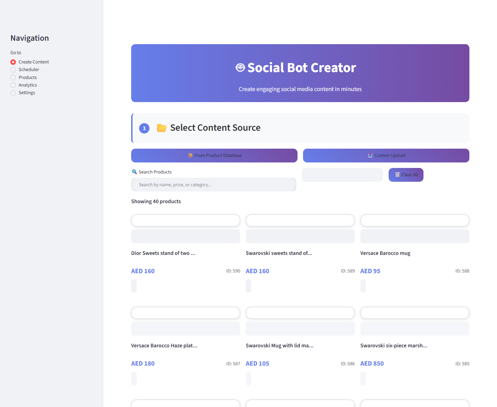
Search by name, then press Enter. The price filter is in AED. Tick Select for Content on every product that should appear in the reel. Each selected photo becomes its own full-screen scene.
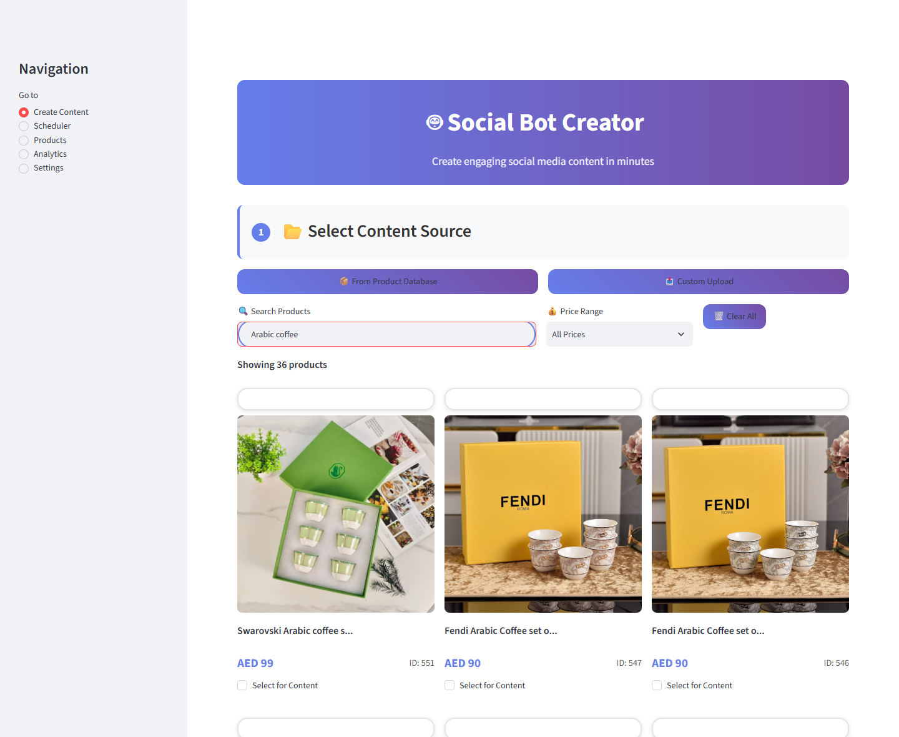
Clear All removes the current selection.
3. Upload your own photos
Choose Custom Upload when the photo is not in the catalog. You can add up to 10 JPG, PNG, or WEBP files. The filename is used as the on-screen title, and no price is shown.
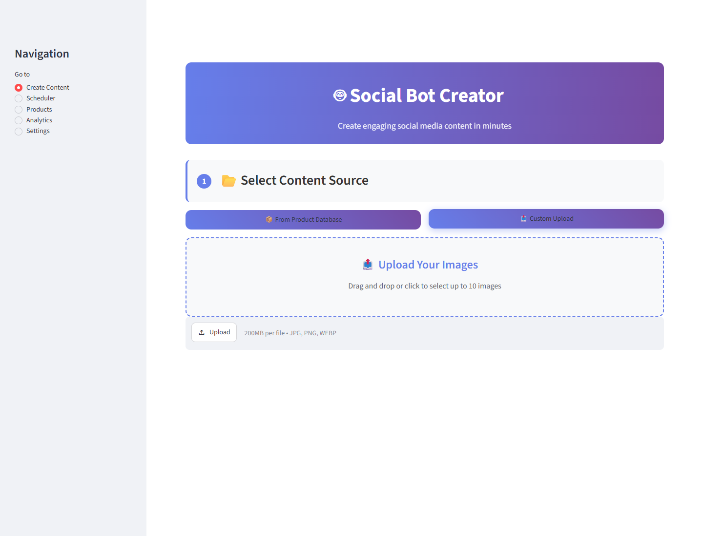
4. Choose the format
After at least one photo is selected, step 2 appears.
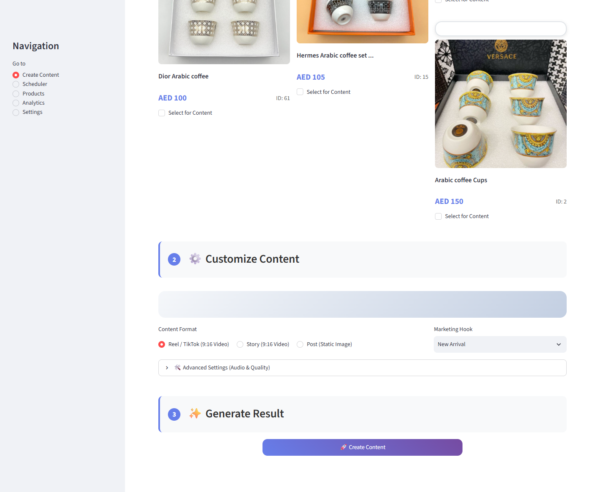
- Reel / TikTok is a 9:16 video. Two or more photos also get a short closing card.
- Story is the same 9:16 video with a shorter default length and no closing card.
- Post keeps the photo as a still image.
Open Advanced Settings to change quality, music, and length.
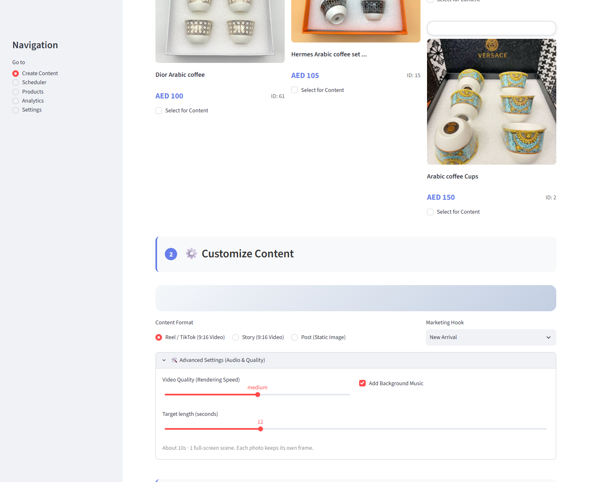
Add Background Music uses the first audio file in social_bot_local/assets/audio (.mp3, .m4a, or .wav). If that folder is empty, the reel is silent, which the platforms still accept. Higher quality takes longer to render. Low is 720p. Medium and high are 1080p.
5. Create the reel
Click Create Content and wait. A 1080p reel usually takes well under a minute. The player appears under a green success message. Play it before you schedule it.
On the video you should see the Aleppo Gift name, the product filling the frame, the product name, and the AED price. Several products fade through black from one scene to the next, then end on “Shop the collection.”
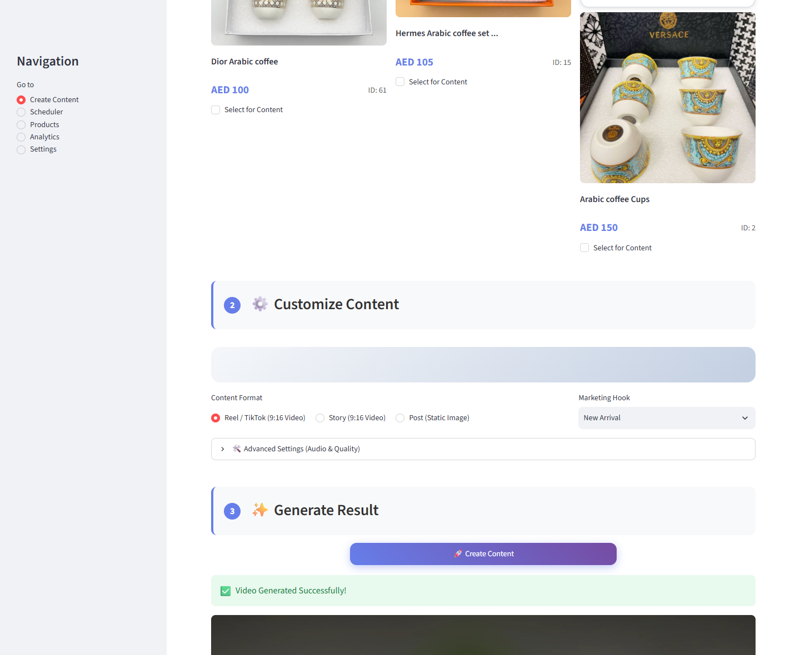
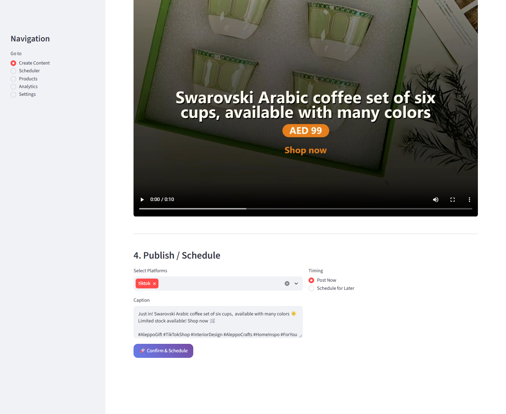
6. Publish or schedule
Step 4 sits under the player.
- Choose TikTok, Instagram, Facebook, or any combination.
- Read the caption. It is filled from the marketing hook, the product name, the price, and hashtags. Edit it before you confirm.
- Choose Post Now or Schedule for Later and set the date and time.
- Click Confirm & Schedule.
Post Now still waits about a minute so the scheduler can pick the job up. The scheduler has to be running. It is running while the Social Bot window from Social Bot.bat is open. The posts are stored locally until that scheduler sends them.
7. Check the queue
Open Scheduler in the sidebar.
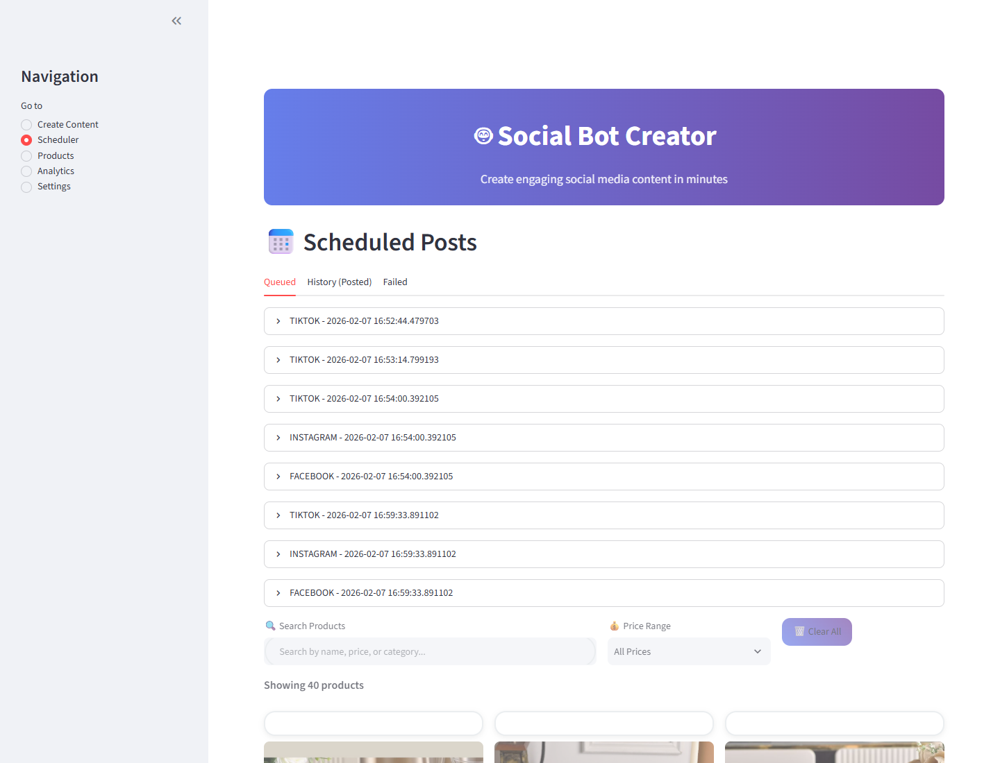
- Queued — waiting for the scheduled time. Cancel removes that post.
- History (Posted) — posts the scheduler marked as sent.
- Failed — posts that returned an error. Retry All Failed puts them back in the queue.
8. Sync the catalog
Products shows the local copy of the catalog. Sync from MySQL pulls active products from the store database and adds ones that are not already stored. Create Content uses this local list, so run a sync when new products are missing from the grid.
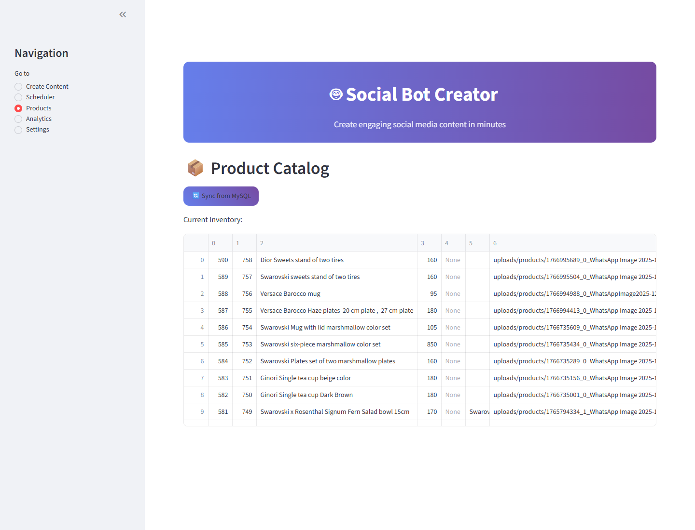
The store database connection comes from .env (MYSQL_HOST, MYSQL_USER, MYSQL_PASSWORD, MYSQL_DATABASE). Copy .env.example to .env if that file is not there yet.
9. Connect the platforms
Open Settings and save each key with its own button. Values stay in the local Social Bot database.
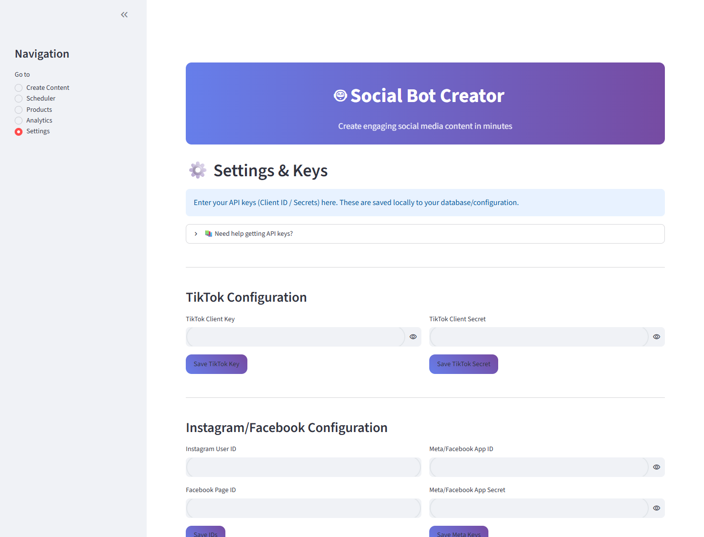
The Need help getting API keys? section opens SOCIAL_MEDIA_API_SETUP_GUIDE.html, which walks through the TikTok, Instagram, and Facebook setup. You can also save an ngrok token here if Instagram needs a temporary public link for the video file. Re-Initialize Database checks that the local tables exist. It does not delete the catalog.
10. Analytics
Analytics currently shows sample charts so you can see where live results will go. It does not yet read real view counts from the platforms.
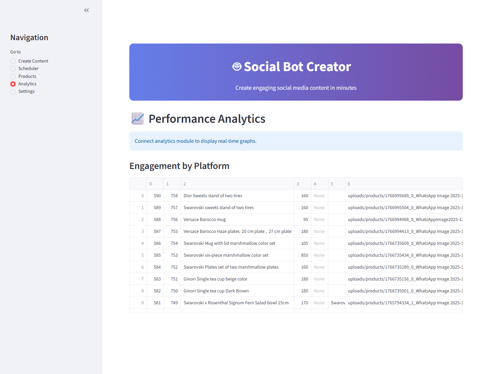
What a reel contains
- Vertical video, 1080×1920 at medium or high quality, 30 frames per second.
- The store name at the top, the product name, and the price in AED.
- One scene per photo, with a short move and a fade through black between scenes.
- A closing card on reels that contain two or more products.
- An audio track, either your music or silence.
Finished files are saved under social_bot_local/output/videos.